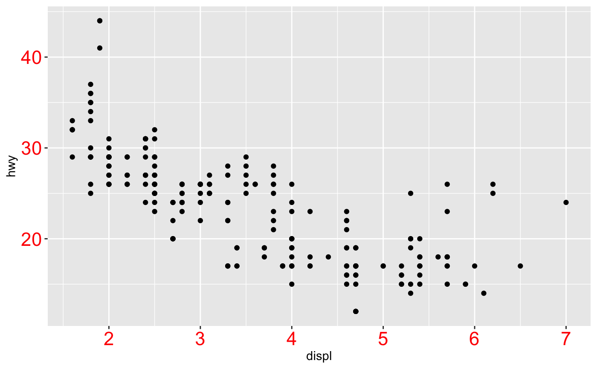
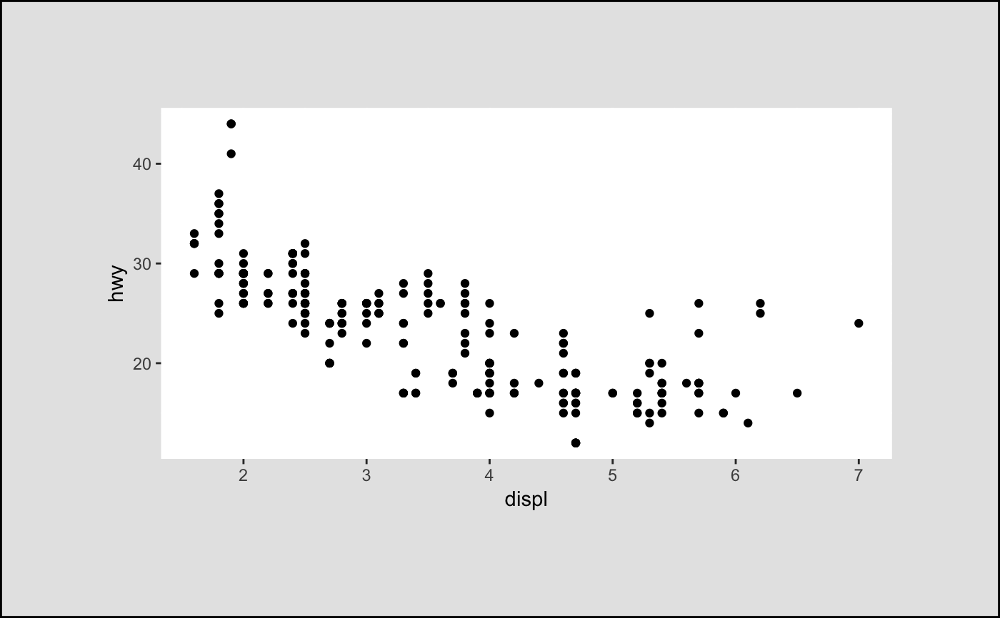

Theme elements
In conjunction with the theme system, these objects specify the display of how non-data components of the plot are a drawn.
element_blank() element_rect(fill = NULL, colour = NULL, size = NULL, linetype = NULL, color = NULL, inherit.blank = FALSE) element_line(colour = NULL, size = NULL, linetype = NULL, lineend = NULL, color = NULL, arrow = NULL, inherit.blank = FALSE) element_text(family = NULL, face = NULL, colour = NULL, size = NULL, hjust = NULL, vjust = NULL, angle = NULL, lineheight = NULL, color = NULL, margin = NULL, debug = NULL, inherit.blank = FALSE)
Arguments
- fill
- Fill colour.
- colour, color
- Line/border colour. Color is an alias for colour.
- size
- Line/border size in mm; text size in pts.
- linetype
- Line type. An integer (0:8), a name (blank, solid, dashed, dotted, dotdash, longdash, twodash), or a string with an even number (up to eight) of hexadecimal digits which give the lengths in consecutive positions in the string.
- inherit.blank
- Should this element inherit the existence of an
element_blank among its parents? If
TRUEthe existence of a blank element among its parents will cause this element to be blank as well. IfFALSEany blank parent element will be ignored when calculating final element state. - lineend
- Line end Line end style (round, butt, square)
- arrow
- Arrow specification, as created by
arrow - family
- Font family
- face
- Font face ("plain", "italic", "bold", "bold.italic")
- hjust
- Horizontal justification (in [0, 1])
- vjust
- Vertical justification (in [0, 1])
- angle
- Angle (in [0, 360])
- lineheight
- Line height
- margin
- Margins around the text. See
marginfor more details. When creating a theme, the margins should be placed on the side of the text facing towards the center of the plot. - debug
- If
TRUE, aids visual debugging by drawing a solid rectangle behind the complete text area, and a point where each label is anchored.
Value
An S3 object of class element.
Details
-
element_blank: draws nothing, and assigns no space. -
element_rect: borders and backgrounds. -
element_line: lines. -
element_text: text.
Examples
plot <- ggplot(mpg, aes(displ, hwy)) + geom_point() plot + theme( panel.background = element_blank(), axis.text = element_blank() )plot + theme( panel.background = element_rect(fill = "grey95"), panel.border = element_rect(colour = "grey70", fill = NA, size = 1) )